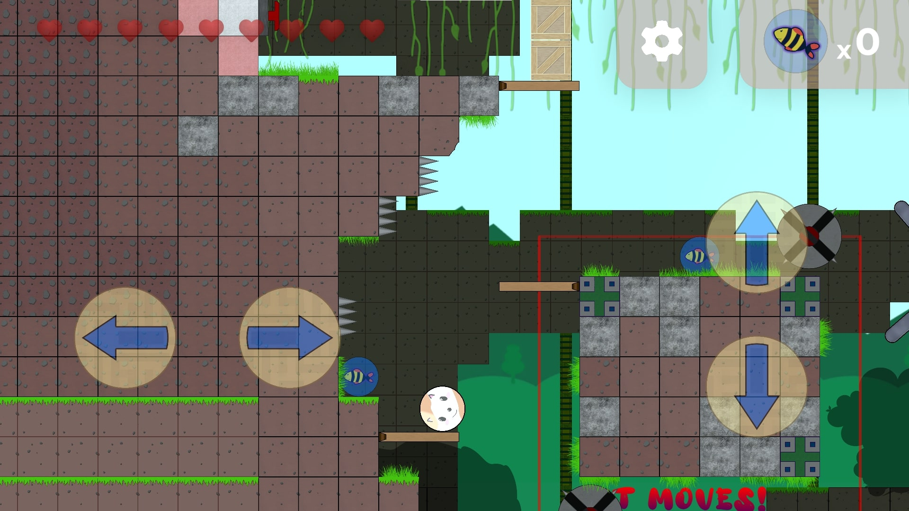
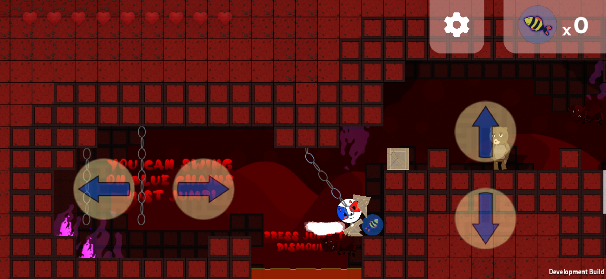
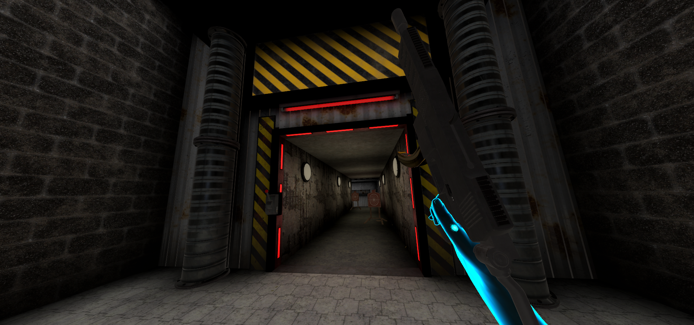
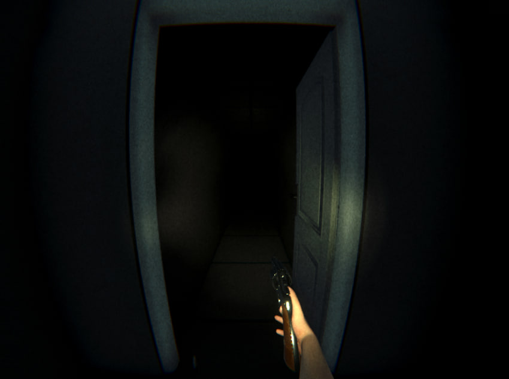
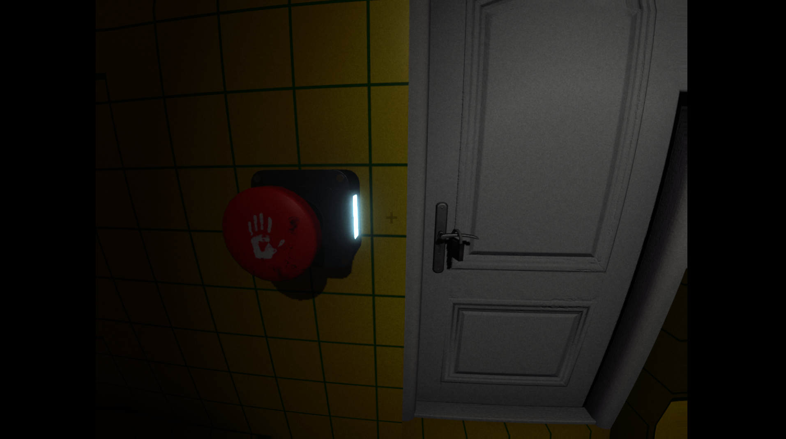
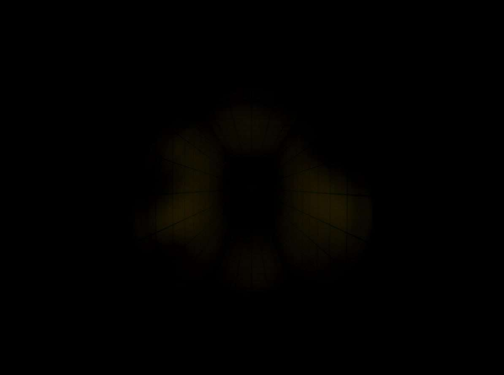

Back
My Projects
Tails of a Cat (RELEASED)
For this project, I made it as the sole, independent developer, as such I made:
the
sprites, the codebase, the levels, the design, etc. This project was made in Unity, from 2022 to early-mid
2023: Travel through 3 detailed worlds, and transform into different materials and use their abilities to
overcome different levels and enemies.



Immersion Sector (UNRELEASED)
Immersion Sector is physics-based VR game, which was under development during
2021 to early 2022, in this project I designed multiple fully fleshed out levels, including: A gun range/shoot
house, a desert sandbox scene, and a city/sewer scene, which is showcased in the video below - all of these
scenes were optimised by me to work for PC and for mobile VR headsets (Oculus Quest 1 & 2). Lastly, I also
helped with general maintenance of the project within Unity, and with modelling several props


Project Silent (TO BE RELEASED)
For this project, I am developing it as the sole, independent developer, this
project is still under construction, however, so far there is a physics-based rigidbody player controller,
with precise control of acceleration, max speed, independent of player mass, I have also developed an
abstract interaction system which allows for player grabbing of kinematic objects such as guns and physics
object such as crates and bottles, it also allows for general interactions with environmental objects such as
pushing a button or opening a door. This project is planned to be released in 2024.


